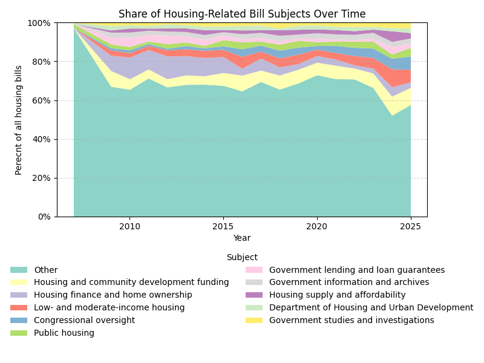
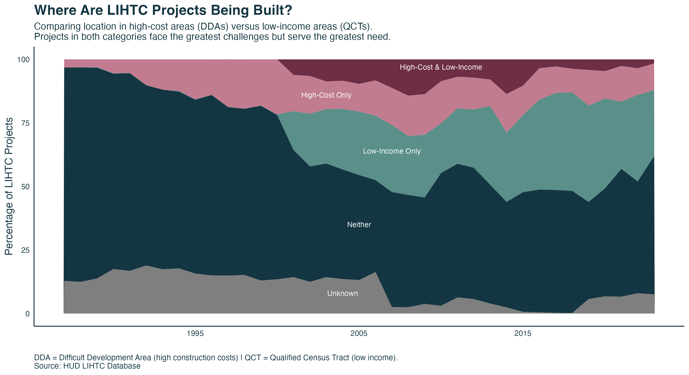
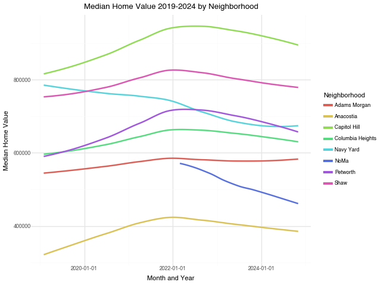
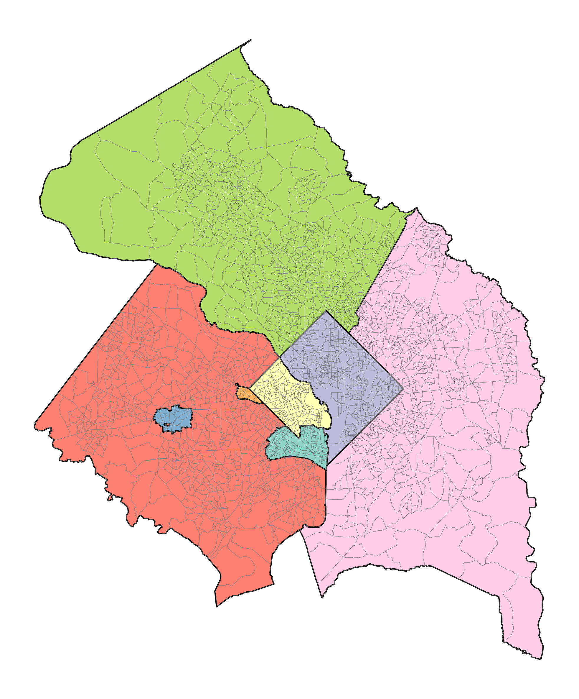
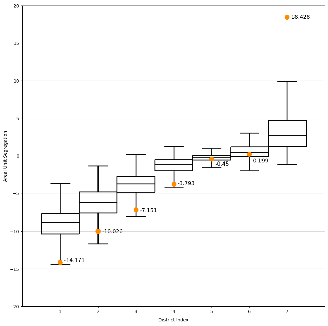

I study topics in education, community development, and electoral redistricting, and am passionate about promoting equity through data-driven policy. Find more information on me and my work below.
You can contact me at rlw137@georgetown.edu.

In this project, I collected data on over 1,500 congressional bills on housing policy, including their text and associated metadata. Using Latent Dirichlet Allocation, I created a 24-topic model and analyzed the relationships between these topics, party sponsors, bill outcomes, and subject assignments. I ultimately find most bills never make it past committee, a small set of topics consistently dominates the agenda, and Democrats are the primary drivers of these initiatives. Even within popular topics like public housing or community development, very few bills become law, highlighting both the procedural hurdles and the selective focus of Congress on particular aspects of housing policy.

The Low Income Housing Tax Credit (LIHTC) is the federal government's primary program for encouraging the development of affordable rental housing. This project provides a comprehensive visual analysis of LIHTC allocations, examining historical trends in program usage, gographic distribution across states, and patterns in issing data and data quality, among more.

In this project, I utilize data on eviction filings in the Washington, D.C. metropolitan area to design several classification pipelines identifing census blocks with a high eviction risk. I also consider several significant predictors of eviction, and discuss how machine learning methods can inform targeted policy interventions combating housing insecurity.
This quantiative analysis utilizes state-level data to evaluate K-12 teacher absenteeism pre- and post-pandemic. We find that teacher absenteeism increased in both high- and low-income schools, though the exact changes are subject to localized context.

In this project, we explore the relationships between crime rates, housing markets, and online perception of neighborhood safety in Washington, D.C. We utilize public datasets on both crime rates and housing prices, and work with Reddit's API to collect text data representing public sentiment on neighborhood safety. We ultimately find that trends in perceived safety appear to lag behind changes in true crime rates, and that online safety sentiments and housing prices appear to be correlated, though more analysis is needed to parse the exact nature of this relationship.
This policy proposal outlines a cash based, reduced fare program for Washington DC's Capital Bike Share, emphasising accessability for low income communities and drawing on similar programs nation wide.

In this project, I utilize the Python GerryChain package made public by Tuft's MGGG Lab to evaluate racial segregation in Alabama's 2021 congressional districts with Markov Chain Monte Carlo simulations. I also utilize Saporito and Maliniak’s areal unit segregation measure—baed on a nearest neighbors approach—to quantify segregation.
An often articulated "conservative paradox" asks why low-income Americans continue to support conservative policies that strip the welfare they depend upon. In this study, I conducted 20 hours of interviews with local conservative voters in Williamsburg, Virginia on their political and economic views. I explore the narratives that these voters employ to make sense of the world around them and offer evidence from both literature and my own work against the “paradox” of conservatism. I also discuss how urban-rural divides, a sense of disrespect, and race informs my interviewees' opinions on economic opportunity and inequality.
I am originally from New Jersey, but have since lived in Virginia, Boston, and Washington D.C. Outside of work, I enjoy riding horses, baking, and creating art.